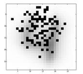

<!DOCTYPE html>
<html><head>
<meta http-equiv="content-type" content="text/html; charset=UTF-8">
<title>UCI Machine Learning Repository: Gisette Data Set</title>

<!-- Stylesheet link -->
<link rel="stylesheet" type="text/css" href="UCIGisette_files/ml.css">

<script language="JavaScript" type="text/javascript">
<!--
function checkform ( form )
{
  // see http://www.thesitewizard.com/archive/validation.shtml
  // for an explanation of this script and how to use it on your
  // own website

  // ** START **
  if (form.q.value == "")
  {
    alert( "Please enter search terms." );
    form.q.focus();
    return false ;
  }

  if (getCheckedValue(form.sitesearch) == "ics.uci.edu" && form.q.value.indexOf("site:archive.ics.uci.edu/ml") == -1)
  {
    form.q.value = form.q.value + " site:archive.ics.uci.edu/ml";
  }

  // ** END **
  return true ;
}

// return the value of the radio button that is checked
// return an empty string if none are checked, or
// there are no radio buttons
function getCheckedValue(radioObj) {
	if(!radioObj)
		return "";
	var radioLength = radioObj.length;
	if(radioLength == undefined)
		if(radioObj.checked)
			return radioObj.value;
		else
			return "";
	for(var i = 0; i < radioLength; i++) {
		if(radioObj[i].checked) {
			return radioObj[i].value;
		}
	}
	return "";
}
//-->
</script>

</head>

<body>


<!-- SITE HEADER (INCLUDES LOGO AND SEARCH BOX) -->

<table bgcolor="#003366" width="100%">
<tbody><tr>
	<td>
		<span class="normal"><a href="http://archive.ics.uci.edu/ml/index.html" alt="Home"></a><br>&nbsp;&nbsp;&nbsp;&nbsp;&nbsp;&nbsp;&nbsp;&nbsp;&nbsp;<a href="http://cml.ics.uci.edu/"><font color="FFDD33">Center for Machine Learning and Intelligent Systems</font></a></span>
	</td>
	<td align="right" valign="top" width="100%">
		<span class="whitetext">
		<a href="http://archive.ics.uci.edu/ml/about.html">About</a>&nbsp;
		<a href="http://archive.ics.uci.edu/ml/citation_policy.html">Citation Policy</a>&nbsp;
		<a href="http://archive.ics.uci.edu/ml/donation_policy.html">Donate a Data Set</a>&nbsp;
		<a href="http://archive.ics.uci.edu/ml/contact.html">Contact</a>
		</span>

		<br>
		<br>
		<!-- Search Google -->

		<form method="GET" action="http://www.google.com/custom" onsubmit="return checkform(this);">
		<input name="q" size="30" maxlength="255" type="text">
		<input name="sa" value="Search" type="submit">
		<input name="cof" value="AH:center;LH:130;L:http://archive.ics.uci.edu/assets/logo.gif;LW:384;AWFID:869c0b2eaa8d518e;" type="hidden">
		<input name="domains" value="ics.uci.edu" type="hidden">
		<br>
		<input name="sitesearch" value="ics.uci.edu" checked="checked" type="radio"> <span class="whitetext"><font size="1">Repository</font></span>
		<input name="sitesearch" value="" type="radio"> <span class="whitetext"><font size="1">Web</font></span>
		&nbsp;&nbsp;&nbsp;&nbsp;&nbsp;&nbsp;&nbsp;&nbsp;&nbsp;&nbsp;
		<a href="http://www.google.com/search"></a>
		<br>
		</form>
		<!-- Search Google -->


		<span class="whitetext"><a href="http://archive.ics.uci.edu/ml/datasets.html"><font color="#FFDD33" size="3"><b>View 
ALL Data Sets</b></font></a></span>
		<br>
	</td>
</tr>
</tbody></table>


<br>
<table border="0" cellpadding="2" width="100%"><tbody><tr><td>

   <table><tbody><tr>
     <td valign="top">
	<p>
	<span class="heading"><b>Gisette Data Set</b></span>
	<br><span class="normal"><i><font size="4">Download</font></i>: <a href="http://archive.ics.uci.edu/ml/machine-learning-databases/gisette/"><font style="BACKGROUND-COLOR: #FFFFAA" size="4">Data Folder</font></a>, <a href="http://archive.ics.uci.edu/ml/machine-learning-databases/gisette/Dataset.pdf"><font style="BACKGROUND-COLOR: #FFFFAA" size="4">Data Set Description</font></a></span></p>

	<p class="normal"><b>Abstract</b>: GISETTE is a handwritten digit 
recognition problem. The problem is to separate the highly confusible 
digits '4' and '9'. This dataset is one of five datasets of the NIPS 
2003 feature selection challenge.
</p>
     </td>
     <td> </td>
   </tr></tbody></table>

<table border="1" cellpadding="6">
	<tbody><tr>
		<td bgcolor="#DDEEFF"><p class="normal"><b>Data Set Characteristics:&nbsp;&nbsp;</b></p></td>
		<td><p class="normal">Multivariate</p></td>
		<td bgcolor="#DDEEFF"><p class="normal"><b>Number of Instances:</b></p></td>
		<td><p class="normal">13500</p></td>
		<td bgcolor="#DDEEFF"><p class="normal"><b>Area:</b></p></td>
		<td><p class="normal">Computer</p></td>
	</tr>

	<tr>
		<td bgcolor="#DDEEFF"><p class="normal"><b>Attribute Characteristics:</b></p></td>
		<td><p class="normal">Integer</p></td>
		<td bgcolor="#DDEEFF"><p class="normal"><b>Number of Attributes:</b></p></td>
		<td><p class="normal">5000</p></td>
		<td bgcolor="#DDEEFF"><p class="normal"><b>Date Donated</b></p></td>
		<td><p class="normal">2008-02-29</p></td>
	</tr>
	<tr>
		<td bgcolor="#DDEEFF"><p class="normal"><b>Associated Tasks:</b></p></td>
		<td><p class="normal">Classification</p></td>
		<td bgcolor="#DDEEFF"><p class="normal"><b>Missing Values?</b></p></td>
		<td><p class="normal">N/A</p></td>
		<td bgcolor="#DDEEFF"><p class="normal"><b>Number of Web Hits:</b></p></td>
		<td><p class="normal">22300</p></td>
	</tr>
	<!--
	<tr>
		
		<td bgcolor="#DDEEFF"><p class="normal"><b>Highest Percentage Achieved:&nbsp;&nbsp;</b></p></td>
		<td><p class="normal">N/A</p></td>
	</tr>
	-->
</tbody></table>


<br>

<p class="small-heading"><b>Source:</b></p>
<p class="normal">a. Original owners
<br>The data set was constructed from the MNIST data that is made available by Yann LeCun and Corinna Cortes at <a href="http://yann.lecun.com/exdb/mnist/">http://yann.lecun.com/exdb/mnist/</a>.
<br>
<br>b. Donor of database
<br>This version of the database was prepared for the NIPS 2003 variable
 and feature selection benchmark by Isabelle Guyon, 955 Creston Road, 
Berkeley, CA 94708, USA (<u>isabelle <b>'@'</b> clopinet.com</u>).
<br></p>

<br>

<p class="small-heading"><b>Data Set Information:</b></p>
<p class="normal">The digits have been size-normalized and centered in a
 fixed-size image of dimension 28x28. The original data were modified 
for the purpose of the feature selection challenge. In particular, 
pixels were samples at random in the middle top part of the feature 
containing the information necessary to disambiguate 4 from 9 and higher
 order features were created as products of these pixels to plunge the 
problem in a higher dimensional feature space. We also added a number of
 distractor features called 'probes' having no predictive power. The 
order of the features and patterns were randomized. 
<br>
<br>GISETTE -- Positive ex. -- Negative ex. -- Total
<br>Training set -- 3000 -- 3000 -- 6000
<br>Validation set -- 500 -- 500 -- 1000
<br>Test set -- 3250 -- 3250 -- 6500
<br>All -- 6750 -- 6750 -- 13500
<br>
<br>Number of variables/features/attributes:
<br>Real: 2500
<br>Probes: 2500
<br>Total: 5000
<br>
<br>This dataset is one of five datasets used in the NIPS 2003 feature selection challenge. Our website <a href="http://www.nipsfsc.ecs.soton.ac.uk/">[Web Link]</a> is still open for post-challenge submissions. Information about other related challenges are found at: <a href="http://clopinet.com/challenges">[Web Link]</a>. The CLOP package includes sample code to process these data: <a href="http://clopinet.com/CLOP">[Web Link]</a>.
<br>
<br>All details about the preparation of the data are found in our 
technical report: Design of experiments for the NIPS 2003 variable 
selection benchmark, Isabelle Guyon, July 2003, <a href="http://www.nipsfsc.ecs.soton.ac.uk/papers/NIPS2003-Datasets.pdf">[Web Link]</a> (also included in the dataset archive). Such information was made available only after the end of the challenge.
<br>
<br>The data are split into training, validation, and test set. Target 
values are provided only for the 2 first sets. Test set performance 
results are obtained by submitting prediction results to: <a href="http://www.nipsfsc.ecs.soton.ac.uk/">[Web Link]</a>.
<br>
<br>The data are in the following format:
<br>dataname.param: Parameters and statistics about the data
<br>dataname.feat: Identities of the features (withheld, to avoid biasing feature selection).
<br>dataname_train.data: Training set (a coma delimited regular matrix, patterns in lines, features in columns).
<br>dataname_valid.data: Validation set.
<br>dataname_test.data: Test set.
<br>dataname_train.labels: Labels (truth values of the classes) for training examples.
<br>dataname_valid.labels: Validation set labels (withheld during the benchmark, but provided now).
<br>dataname_test.labels: Test set labels (withheld, so the data can still be use as a benchmark). </p>

<br>

<p class="small-heading"><b>Attribute Information:</b></p>
<p class="normal">We do not provide attribute information to avoid biasing the feature selection process. </p>

<br>

<p class="small-heading"><b>Relevant Papers:</b></p>
<p class="normal">The best challenge entrants wrote papers collected in the book:
<br>Isabelle Guyon, Steve Gunn, Masoud Nikravesh, Lofti Zadeh (Eds.), 
Feature Extraction, Foundations and Applications. Studies in Fuzziness 
and Soft Computing. Physica-Verlag, Springer. <a href="http://clopinet.com/fextract-book/">[Web Link]</a>
<br>
<br>See also:
<br>Isabelle Guyon, et al, 2007. Competitive baseline methods set new 
standards for the NIPS 2003 feature selection benchmark. Pattern 
Recognition Letters 28 (2007) 14381444.
<br>and the associated technical report:
<br>Isabelle Guyon, et al. 2006. Feature selection with the CLOP package. Technical Report. <a href="http://clopinet.com/isabelle/Projects/ETH/TM-fextract-class.pdf">[Web Link]</a>.
<br></p>

<br>


<!-- OLD CODE:

<p class="small-heading"><b>Papers That Cite This Data Set<sup>1</sup>:</b></p>

<p class="normal">N/A</p>

-->


<br>

<p class="small-heading"><b>Citation Request:</b></p>
<p class="normal">Isabelle Guyon, Steve R. Gunn, Asa Ben-Hur, Gideon 
Dror, 2004. Result analysis of the NIPS 2003 feature selection 
challenge. In: NIPS. <a href="http://books.nips.cc/papers/files/nips17/NIPS2004_0194.pdf">[Web Link]</a>.
<br></p>

</td></tr></tbody></table>


<hr>

<!-- OLD CODE:
<p class="normal"><font size=1>[1] Papers were automatically harvested and associated with this data set, in collaboration with <a href="http://rexa.info"><font size=1>Rexa.info</font></a></font></p>
-->


<table align="center" cellpadding="5"><tbody><tr valign="center">
		<td><p class="normal">Supported By:</p></td>
        <td> </td>
        <td><p class="normal">&nbsp;In Collaboration With:</p></td>
        <td></td>
</tr></tbody></table>

<center>
<span class="normal">
<a href="http://archive.ics.uci.edu/ml/about.html">About</a>&nbsp;&nbsp;||&nbsp;
<a href="http://archive.ics.uci.edu/ml/citation_policy.html">Citation Policy</a>&nbsp;&nbsp;||&nbsp;
<a href="http://archive.ics.uci.edu/ml/donation_policy.html">Donation Policy</a>&nbsp;&nbsp;||&nbsp;
<a href="http://archive.ics.uci.edu/ml/contact.html">Contact</a>&nbsp;&nbsp;||&nbsp;
<a href="http://cml.ics.uci.edu/">CML</a>
</span>
</center>


</body></html>